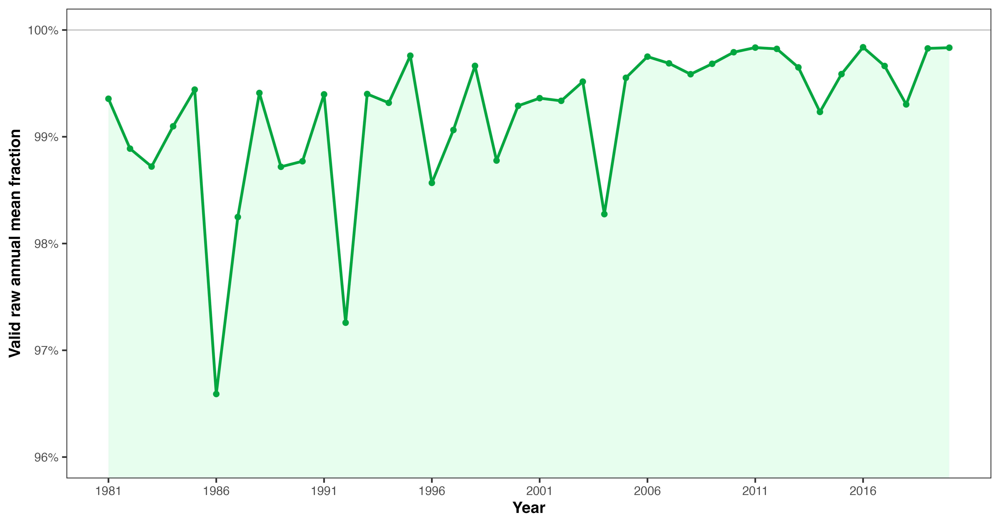
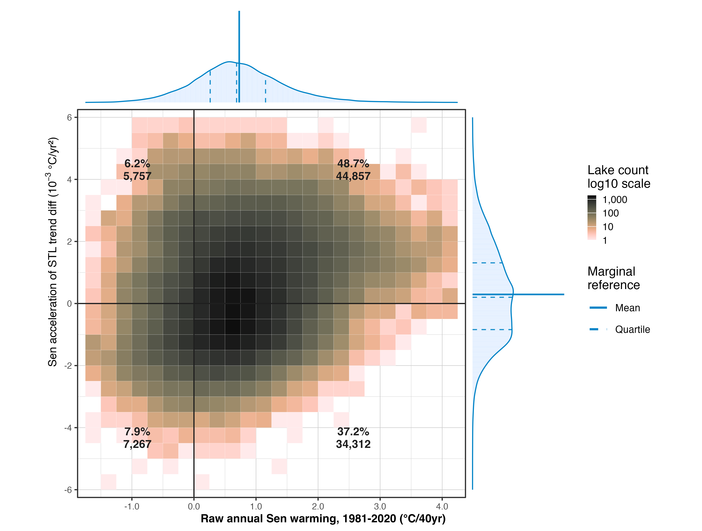
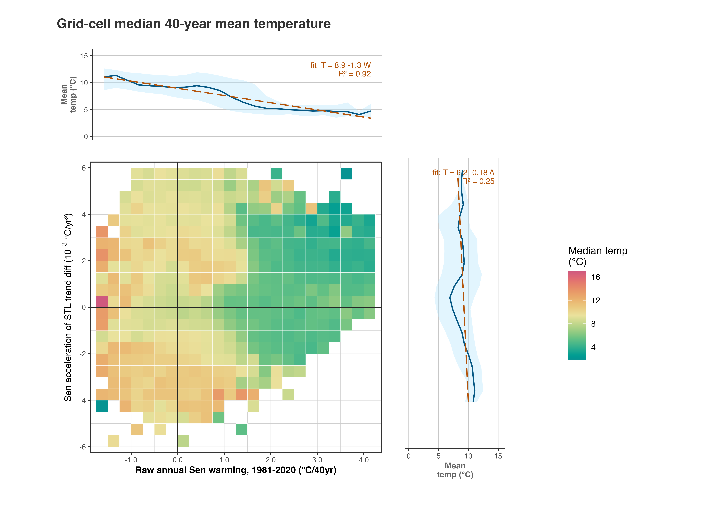
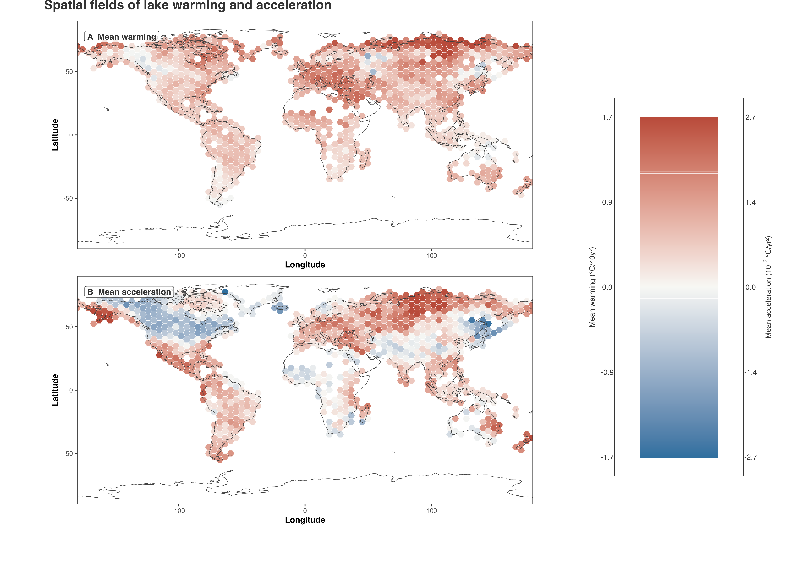
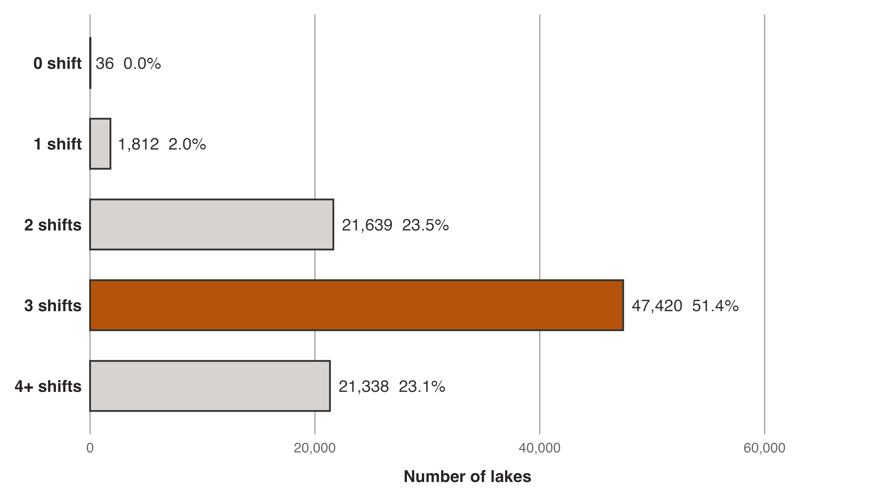
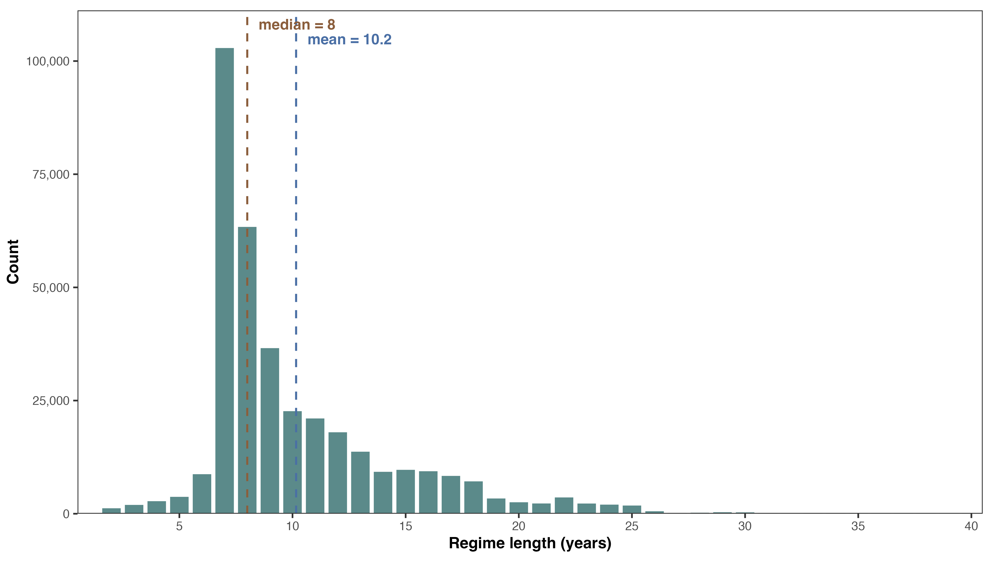
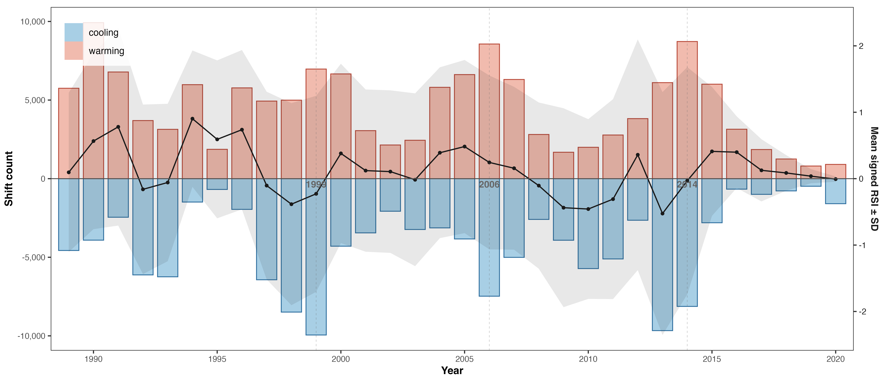

3 Descriptive overview
3.1 Sample coverage
GLAST: 92,245 lakes, 1981–2020.
37 lakes have no data. The least complete year still has valid observations for 96.6% of lakes, with 3,145 lakes missing.
3.2 Long-term warming
NoteFinding 1
79,178 / 92,208 lakes (85.9%) are warming by Sen’s slope of annual mean; 13,030 are cooling.
NoteFinding 2
Mean warming from Sen’s slope of annual mean is 0.730 ± 0.748 °C / 40 yr. Median warming is 0.69 °C / 40 yr, with Q1–Q3 of 0.26–1.15 °C / 40 yr.
NoteFinding 3
Mean warming from Sen’s slope of STL trend is 0.573 ± 0.320 °C / 40 yr. Median warming is 0.52 °C / 40 yr, with Q1–Q3 of 0.34–0.75 °C / 40 yr.
3.3 Long-term acceleration
NoteFinding 4
50,614 / 92,193 lakes (54.9%) show positive acceleration, measured as Sen’s slope of first-differenced STL trend. 41,579 show negative acceleration.
Here “acceleration” means faster and faster warming, slower and slower cooling, or a transition toward warming.
NoteFinding 5
Mean acceleration is 0.294 ± 1.486 × 10-3 °C / yr2. Median acceleration is 0.20 × 10-3 °C / yr2, with Q1–Q3 of -0.84–1.31 × 10-3 °C / yr2.
3.4 Joint warming and acceleration states
| State | n | % |
|---|---|---|
| warming + accelerating | 44,857 | 48.66% |
| warming + decelerating | 34,312 | 37.22% |
| cooling + accelerating (slower and slower cooling) | 5,757 | 6.24% |
| cooling + decelerating | 7,267 | 7.88% |


3.5 Spatial pattern


3.6 RSI intensity
NoteFinding 6
Warming-direction shifts have higher RSI than cooling-direction shifts: median 1.25 vs 1.11. Cooling shifts are more concentrated at lower intensities.
3.7 First summary of detected regime shifts
STL trend -> annual mean -> first-differenced -> STARS (\(L = 7\), \(p = 0.05\)).
NoteFinding 7
273,216 regime shifts are detected, or 2.96 per lake. Warming-direction shifts account for 143,323 (52.5%); cooling-direction shifts account for 129,893 (47.5%).

NoteFinding 8
The 273,216 regime shifts divide the 92,245 lake time series into 365,425 regimes. The median regime length is 8 years; Q1–Q3 is 7–12 years. The most common regime length is 7 years, matching the STARS window length \(L = 7\).

NoteFinding 9
The largest shift-year counts are 1999 (16,918 shifts) and 2014 (16,852 shifts), followed by 2006, 2013, and 1990.
